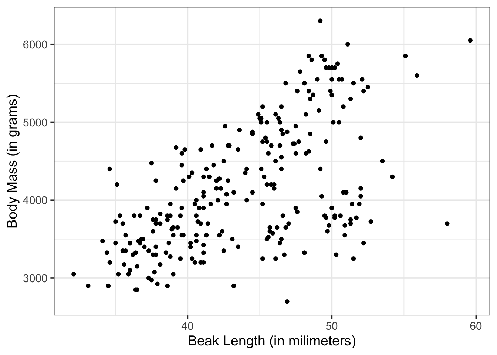
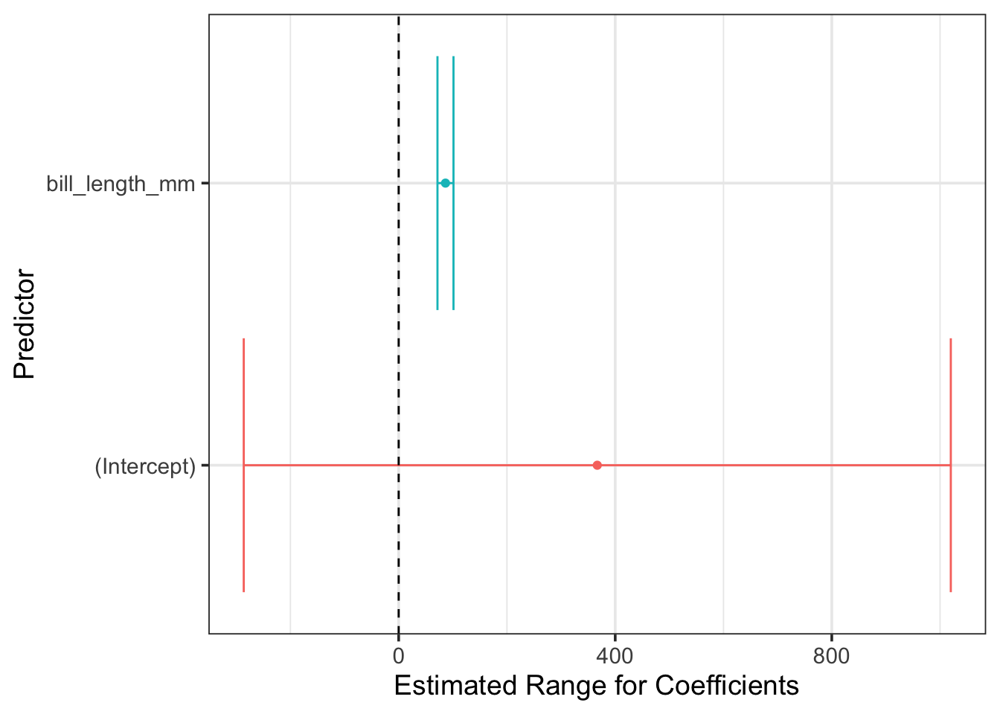
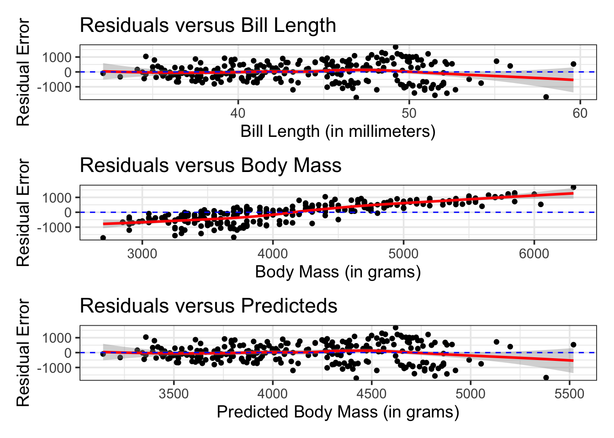

Code
library(tidyverse)
library(tidymodels)
library(kableExtra)
library(patchwork)
tidymodels_prefer()
penguins <- palmerpenguins::penguins
options(kable_styling_bootstrap_options = c("hover", "striped"))
theme_set(theme_bw(base_size = 14)){tidymodels}library(tidyverse)
library(tidymodels)
library(kableExtra)
library(patchwork)
tidymodels_prefer()
penguins <- palmerpenguins::penguins
options(kable_styling_bootstrap_options = c("hover", "striped"))
theme_set(theme_bw(base_size = 14))This notebook gives an overview of the {tidymodels} modeling framework. After reviewing this notebook, you should be able to:
Split data into training and testing sets using initial_split()
Identify, construct, and utilize the major components of a modeling workflow() in the {tidymodels} framework
linear_reg() %>% set_engine("lm")recipe(response ~ predictors, data)model and recipe into a workflow()fit()glance()extract_fit_engine() %>% tidy()predict(){tidymodels} in ActionWe’ll run through an example to see how the components of a {tidymodels} workflow() fit together. We’ll use the palmerpenguins data set since we’ve already seen that one before.
penguins %>%
head() %>%
kable() %>%
kable_styling(bootstrap_options = c("hover", "striped"))| species | island | bill_length_mm | bill_depth_mm | flipper_length_mm | body_mass_g | sex | year |
|---|---|---|---|---|---|---|---|
| Adelie | Torgersen | 39.1 | 18.7 | 181 | 3750 | male | 2007 |
| Adelie | Torgersen | 39.5 | 17.4 | 186 | 3800 | female | 2007 |
| Adelie | Torgersen | 40.3 | 18.0 | 195 | 3250 | female | 2007 |
| Adelie | Torgersen | NA | NA | NA | NA | NA | 2007 |
| Adelie | Torgersen | 36.7 | 19.3 | 193 | 3450 | female | 2007 |
| Adelie | Torgersen | 39.3 | 20.6 | 190 | 3650 | male | 2007 |
Perhaps a reasonable thing to do might be to try predicting body_mass_g of a penguin using their bill_length_mm.
We don’t want to snoop for relationships, so let’s start by splitting our data into training at test sets. We’ll use initial_split() to do this. Note: Please always split your data into training and test sets. We will see why later in our course.
set.seed(300)
penguin_splits <- initial_split(penguins, prop = 0.75)
penguins_train <- training(penguin_splits)
penguins_test <- testing(penguin_splits)There are multiple things going on in the code cell above.
Using set.seed() guarantees that every time we run this notebook, we’ll get the same training and testing data. This is important so as not to leak information from the test data into the model training process.
The second line uses initial_split() to assign 75% of rows to belong to the training data and the remaining 25% to belong to the testing data. We can change the prop argument if we would like different proportions.
initial_split() function doesn’t actually create the training and test data sets. It just identifies the rows as belonging to belong to one or the other.We obtain the training data by using the training() function on our split object.
Similarly, we obtain the test data by using the testing() function on our split object.
Now we’ve got our two data sets. Lock up that test data and keep it hidden. We don’t want to know anything about what is in there. This ensures that penguins_test will be an unbiased test for our fitted model.
Now that we have our training data, we can look at it. In particular, we may want to know if there is visual evidence of a relationship between bill_length_mm and body_mass_g.
penguins_train %>%
head() %>%
kable() %>%
kable_styling()| species | island | bill_length_mm | bill_depth_mm | flipper_length_mm | body_mass_g | sex | year |
|---|---|---|---|---|---|---|---|
| Adelie | Torgersen | 37.2 | 19.4 | 184 | 3900 | male | 2008 |
| Adelie | Biscoe | 41.6 | 18.0 | 192 | 3950 | male | 2008 |
| Gentoo | Biscoe | 50.0 | 15.2 | 218 | 5700 | male | 2007 |
| Chinstrap | Dream | 46.5 | 17.9 | 192 | 3500 | female | 2007 |
| Adelie | Dream | 36.5 | 18.0 | 182 | 3150 | female | 2007 |
| Chinstrap | Dream | 45.7 | 17.0 | 195 | 3650 | female | 2009 |
penguins_train %>%
ggplot() +
geom_point(aes(x = bill_length_mm, y = body_mass_g)) +
labs(x = "Beak Length (in milimeters)",
y = "Body Mass (in grams)")Warning: Removed 2 rows containing missing values or values outside the scale range
(`geom_point()`).
Okay. It looks like there might be a relationship here!
For the majority of the semester we’ll be working with linear regression models. This means that we’ll see the linear_reg() model being specified quite often. The great thing about {tidymodels} is that everything we do with linear_reg() is transferable to other model classes. We’ll see that later on in our course.
mass_length_spec <- linear_reg() %>%
set_engine("lm")In the code cell above, we created an instance of a linear regression model constructor, and set its fitting engine to "lm". The engine chosen determines how the model will be fit – we’ll use "lm" almost always. We stored our model constructor in an object called mass_length_spec.
Recipes are very useful aspects of a modeling workflow. We’ll use them often. For now, we’ll create the simplest recipe possible – a recipe consisting of only a formula. We’ll build additional steps into our recipes as we progress through our course.
mass_length_rec <- recipe(body_mass_g ~ bill_length_mm, data = penguins_train)In the code cell above, we specify that our model will predict body_mass_g, and it will use only the variable bill_length_mm in order to make that prediction. The variables used in this model can be found in penguins_train.
Now we’re ready to package our model specification and our recipe into a workflow().
workflow()We’ll see that workflow()s are very useful aspects of the tidymodels modeling framework. They’ll allow us to not only optimize our models, but also optimize decisions that need to be made prior to the models being fit. Additionally, utilizing a workflow() will ensure that any new data we ask our model to make predictions for will go through exactly the same transformations as the training data went through.
Let’s create a workflow.
mass_length_wf <- workflow() %>%
add_model(mass_length_spec) %>%
add_recipe(mass_length_rec)We’ve created a workflow() object and now have added a model and a recipe to it. Now that we’ve have that simple workflow, let’s fit it to our training data!
What we’ve essentially done up to this point is we’ve created a structure which is ready to become a trained model. In terms of a baking analogy, we’ve taken out all of our ingredients and we know how we want to combine them in order to bake a batch of cookies. We haven’t made the cookies (fit the model) yet.
Let’s fit the model now.
mass_length_fit <- mass_length_wf %>%
fit(penguins_train)We just took our workflow object, fit it to the penguins_train data, and stored the result in mass_length_fit. This is now a fitted model. We can see the structure of that model, use it to make predictions, and more. You may notice that we had to pass the training data as an agument to the fit() function again. That’s because passing penguins_train as a data parameter to our recipe() earlier only allowed the recipe to learn what kind of variables it was working with. It didn’t use that data for anything else.
Now that we have a fitted model, let’s check out what it looks like! We’ll first look at the global model fit / performance metrics. We can do this by passing our fitted model object to the glance() function.
mass_length_fit %>%
glance() %>%
kable() %>%
kable_styling()| r.squared | adj.r.squared | sigma | statistic | p.value | df | logLik | AIC | BIC | deviance | df.residual | nobs |
|---|---|---|---|---|---|---|---|---|---|---|---|
| 0.349806 | 0.3472461 | 651.6183 | 136.6526 | 0 | 1 | -2020.986 | 4047.972 | 4058.607 | 107850021 | 254 | 256 |
We’ll talk more about these model metrics in our next class meeting. We can also see information about the individual terms in our model by piping our fitted model object to extract_fit_engine() and to tidy(), giving us a data frame of metrics for the individual model terms.
mass_length_fit %>%
extract_fit_engine() %>%
tidy() %>%
kable() %>%
kable_styling()| term | estimate | std.error | statistic | p.value |
|---|---|---|---|---|
| (Intercept) | 366.84419 | 326.51140 | 1.123526 | 0.2622747 |
| bill_length_mm | 86.45721 | 7.39592 | 11.689851 | 0.0000000 |
Great! We’ve accessed the model coefficients, and some statistical measures on those estimated values. More on those in our next class meeting as well!
Since our model is fit, we can also use it to make predictions on new data. Perhaps we have two new penguins whose bill_length_mm are \(38\) and \(45\) millimeters, respectively.
new_data <- tibble(bill_length_mm = c(38, 45))
mass_length_fit %>%
predict(new_data) %>%
kable() %>%
kable_styling(bootstrap_options = c("hover", "striped"))| .pred |
|---|
| 3652.218 |
| 4257.418 |
We get a predicted body mass for each penguin! We know, almost surely, that these predictions are wrong. We can gain some confidence in our predictions by obtaining an interval of plausible body masses rather than a single point prediction.
mass_length_fit %>%
predict(new_data, type = "conf_int") %>%
kable() %>%
kable_styling(bootstrap_options = c("hover", "striped"))| .pred_lower | .pred_upper |
|---|---|
| 3535.702 | 3768.734 |
| 4175.341 | 4339.496 |
mass_length_fit %>%
predict(new_data, type = "pred_int") %>%
kable() %>%
kable_styling(bootstrap_options = c("hover", "striped"))| .pred_lower | .pred_upper |
|---|---|
| 2363.676 | 4940.760 |
| 2971.533 | 5543.304 |
Perhaps you’ve noticed that type = "conf_int" and type = "pred_int" led to different intervals. This is because the confidence intervals ("conf_int") attempt to predict the average body_mass_g for all penguins whose bill_length_mm is \(38\) and \(45\) millimeters, respectively. The prediction intervals ("pred_int") are much wider. This is because they attempt to predict the body_mass_g for a single penguin whose bill_length_mm is \(38\) and \(45\) millimeters, respectively. It is important to note whether your goal is to predict an average response or an individual response, and to use the appropriate interval.
If we are ready to give our model one final test, then we can assess the model’s performance on the test data using a metric of our choosing.
mass_length_fit %>%
augment(penguins_test) %>%
select(bill_length_mm, body_mass_g, .pred) %>%
head() %>%
kable() %>%
kable_styling()| bill_length_mm | body_mass_g | .pred |
|---|---|---|
| 39.1 | 3750 | 3747.321 |
| 36.6 | 3700 | 3531.178 |
| 37.7 | 3600 | 3626.281 |
| 35.9 | 3800 | 3470.658 |
| 38.2 | 3950 | 3669.509 |
| 37.9 | 3150 | 3643.572 |
In the code cell above, we used augment() rather than predict(), which is a special function that appends a .pred column (or the corresponding interval columns) to the data frame containing our new data. We then selected only the relevant columns for our small model.
Using this new data frame, we can compare the truth (known, actual body_mass_g) to our predictions (.pred) to assess the quality of predictions.
mass_length_fit %>%
augment(penguins_test) %>%
select(bill_length_mm, body_mass_g, .pred) %>%
rmse(body_mass_g, .pred) %>%
kable() %>%
kable_styling()| .metric | .estimator | .estimate |
|---|---|---|
| rmse | standard | 631.3512 |
mass_length_fit %>%
augment(penguins_test) %>%
select(bill_length_mm, body_mass_g, .pred) %>%
rsq(body_mass_g, .pred) %>%
kable() %>%
kable_styling()| .metric | .estimator | .estimate |
|---|---|---|
| rsq | standard | 0.3669341 |
mass_length_fit %>%
augment(penguins_test) %>%
select(bill_length_mm, body_mass_g, .pred) %>%
mae(body_mass_g, .pred) %>%
kable() %>%
kable_styling()| .metric | .estimator | .estimate |
|---|---|---|
| mae | standard | 506.5625 |
There are lots of metrics we could use. If we are interested in multiple metrics, we can collect them all at once by creating a metric_set().
my_metrics <- metric_set(rmse, mae, rsq)
mass_length_fit %>%
augment(penguins_test) %>%
select(bill_length_mm, body_mass_g, .pred) %>%
my_metrics(body_mass_g, .pred) %>%
kable() %>%
kable_styling()| .metric | .estimator | .estimate |
|---|---|---|
| rmse | standard | 631.3511796 |
| mae | standard | 506.5625374 |
| rsq | standard | 0.3669341 |
The following summary shows the basic steps for using the {tidymodels} framework for fitting a statistical model to data.
#create the model specification
lin_reg_spec <- linear_reg() %>%
set_engine("lm")
#Create a recipe to describe what the model will do
lin_reg_rec <- recipe(response ~ predictors, data)
#package the model and recipe into a workflow
lin_reg_wf <- workflow() %>%
add_model(lin_reg_spec) %>%
add_recipe(lin_reg_rec)
#fit the workflow to the training data
lin_reg_fit <- lin_reg_wf %>%
fit(training_data)Once we have a fitted workflow, there’s lots we can do with it. We can see global model-utility and performance metrics.
lin_reg_fit %>%
glance()We can see the structure of the fitted model.
lin_reg_fit %>%
extract_fit_engine() %>%
tidy() %>%
kable() %>%
kable_styling()We can also use our fitted workflow to make predictions on new data.
lin_reg_fit %>%
predict(new_data) %>%
head() %>%
kable() %>%
kable_styling()We can append predictions to an existing data frame of new records.
lin_reg_fit %>%
augment(new_data) %>%
head() %>%
kable() %>%
kable_styling()Because we can obtain the model coefficients and statistical measures of uncertainty on those estimates, we can plot the confidence intervals on those model coefficients. Plotting the plausible range for the fitted coefficients, and checking to see whether the interval overlaps with \(0\) is a great way to convey, visually, whether a predictor is significant or not. Furthermore, this provides a convincing description of the direction and magnitude of the estimated effect size, which is understandable even by non-experts!
mass_length_fit %>%
extract_fit_engine() %>%
tidy() %>%
ggplot() +
geom_errorbarh(aes(xmin = estimate - (2*std.error),
xmax = estimate + (2*std.error),
y = term,
color = term),
show.legend = FALSE) +
geom_point(aes(x = estimate, y = term, color = term),
show.legend = FALSE) +
geom_vline(xintercept = 0, linetype = "dashed") +
labs(x = "Estimated Range for Coefficients",
y = "Predictor")
From the plot above, we can see that the range of plausible coefficients on the bill length predictor includes only positive values. That is, penguins with longer bills are expected to be more massive!
It is important not to treat our models as black boxes or to follow them blindly. The error metrics we compute tell us only part of the story. To understand fully how well our model performs and where/if the model should be trusted, we must understand the types of errors our models make. Building confidence and prediction intervals using our models assumes that the residuals (prediction errors) are distributed randomly, with mean \(0\) and constant standard deviation. If these assumptions are not satisfied, then our intervals cannot be trusted!
p1 <- mass_length_fit %>%
augment(penguins_train) %>%
select(bill_length_mm, body_mass_g, .pred) %>%
mutate(residual = body_mass_g - .pred) %>%
ggplot() +
geom_point(aes(x = bill_length_mm, y = residual)) +
geom_smooth(aes(x = bill_length_mm, y = residual),
color = "red") +
geom_hline(yintercept = 0,
linetype = "dashed",
color = "blue") +
labs(title = "Residuals versus Bill Length",
x = "Bill Length (in millimeters)",
y = "Residual Error")
p2 <- mass_length_fit %>%
augment(penguins_train) %>%
select(bill_length_mm, body_mass_g, .pred) %>%
mutate(residual = body_mass_g - .pred) %>%
ggplot() +
geom_point(aes(x = body_mass_g, y = residual)) +
geom_smooth(aes(x = body_mass_g, y = residual),
color = "red") +
geom_hline(yintercept = 0,
linetype = "dashed",
color = "blue") +
labs(title = "Residuals versus Body Mass",
x = "Body Mass (in grams)",
y = "Residual Error")
p3 <- mass_length_fit %>%
augment(penguins_train) %>%
select(bill_length_mm, body_mass_g, .pred) %>%
mutate(residual = body_mass_g - .pred) %>%
ggplot() +
geom_point(aes(x = .pred, y = residual)) +
geom_smooth(aes(x = .pred, y = residual),
color = "red") +
geom_hline(yintercept = 0,
linetype = "dashed",
color = "blue") +
labs(title = "Residuals versus Predicteds",
x = "Predicted Body Mass (in grams)",
y = "Residual Error")
(p1 / p2 / p3)`geom_smooth()` using method = 'loess' and formula = 'y ~ x'Warning: Removed 2 rows containing non-finite outside the scale range
(`stat_smooth()`).Warning: Removed 2 rows containing missing values or values outside the scale range
(`geom_point()`).`geom_smooth()` using method = 'loess' and formula = 'y ~ x'Warning: Removed 2 rows containing non-finite outside the scale range (`stat_smooth()`).
Removed 2 rows containing missing values or values outside the scale range
(`geom_point()`).`geom_smooth()` using method = 'loess' and formula = 'y ~ x'Warning: Removed 2 rows containing non-finite outside the scale range (`stat_smooth()`).
Removed 2 rows containing missing values or values outside the scale range
(`geom_point()`).
Note: There are several concerning take-aways of the previous three plots.
In the first and third plots, we see evidence that the spread of the residuals widens for lengthier bills and for heavier body masses.
This means that any confidence or prediction intervals we build using our models will be unreliable!
The intervals we construct will be too optimistic for penguins with above average bill lengths or body mass. Those confidence and prediction intervals smaller penguins will also not be narrow enough.
In the second plot, we see a clear linear trend in the relationship between our prediction errors and the true penguin body mass.